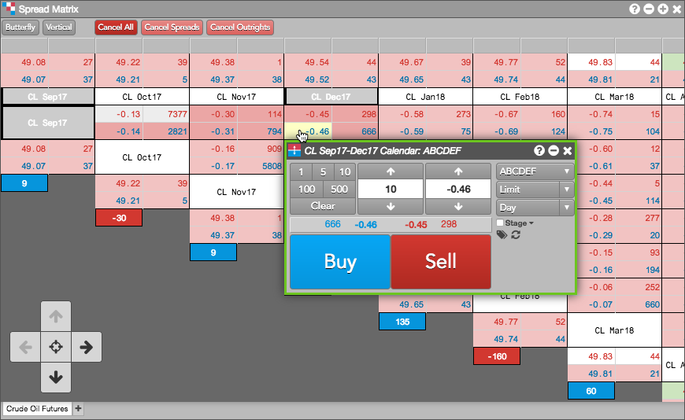
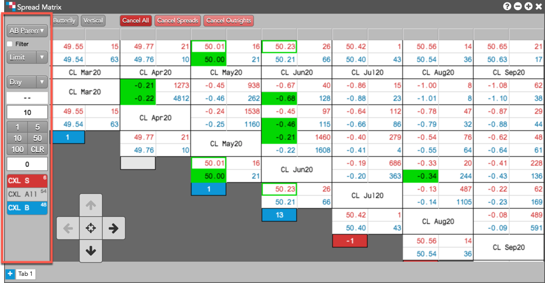
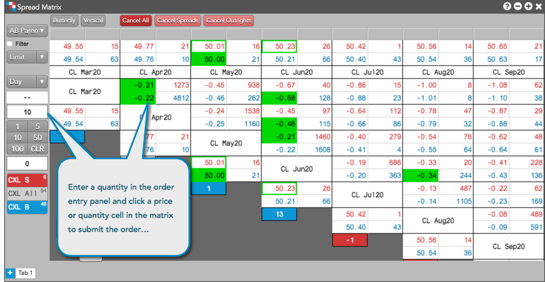

Using the Spread Matrix and a floating order entry screen, you can quickly enter orders for all outrights, calendar spreads, or inter-product spreads within a single window for active spread trading.
Your floating order entry window appears.

Note: The cells containing spread contract names are highlighted to indicate which contracts you are spread trading.
Spread Matrix supports single-click order entry using the order entry panel. To display the panel, right-click and select the Settings menu, check the Enable single-click order entry setting and click Save. The order entry panel appears on the left side of the Spread Matrix and works similar to the order panel in MD Trader.

Tip: You can also display the order entry panel by selecting Show/hide | Show order entry panel from the right-click context menu.
When single-click order entry is enabled, click a Spread Matrix price or quantity cell to submit an order at that price with the quantity set in the order entry panel.

When submitting orders using the order entry panel in Spread Matrix, consider the following:
After submitting an order in Spread Matrix, you can manage the order using the Floating Order Book. Based on your Preferences | Orders | Launch floating order book using: option, you can open the Floating Order Book by clicking the Bid Price or Ask Price for an outright or spread in the matrix.
Once opened, use the Floating Order Book to modify or cancel working orders that you submitted using Spread Matrix or other order entry widget.
Tip: When the floating order book launch method is set to "left click" in Preferences, a ">" is shown at the right edge of the cell. Clicking the ">" will launch the floating order book.